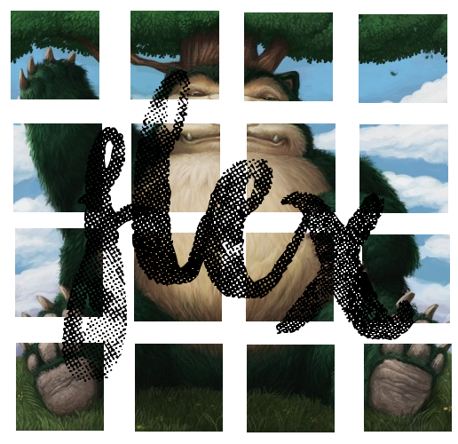
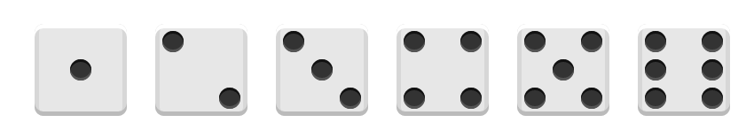
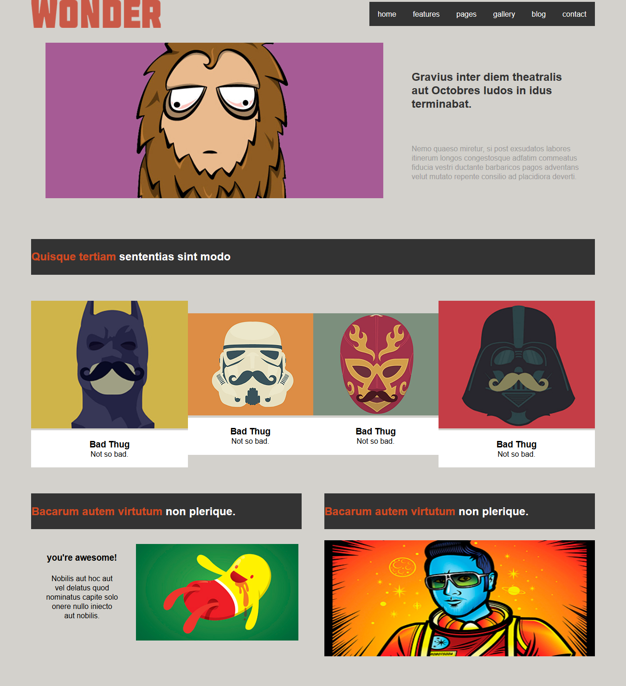

||| Ronflex
Essayez de reconstituer Ronflex à l'aide de ce que vous venez d'apprendre. (Sans le réveiller évidemment...)

||| Jeu de dés
Recréez toutes les faces d'un dé, en vous servant des propriétés flex pour disposer les points.

||| Maquette flex
A l'aide des propriétés flex que vous venez d'apprendre, reconstituez la maquette de site toute cassée à partir de l'image ci-dessous (clic sur l'image pour l'ouvrir dans un nouvel onglet en grand).

La maquette cassée à réparer !